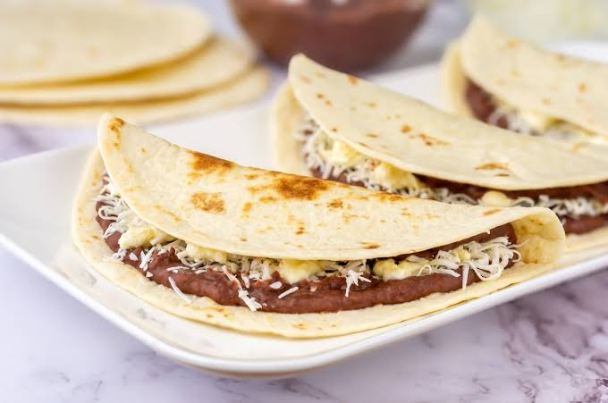
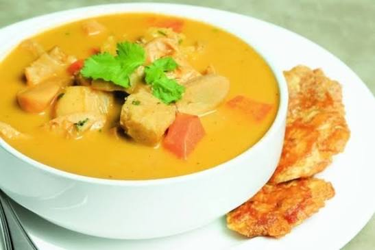
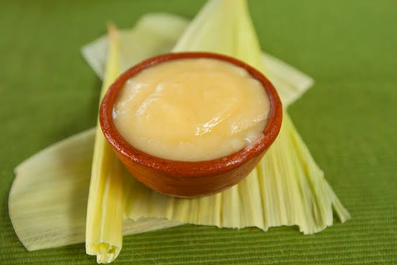
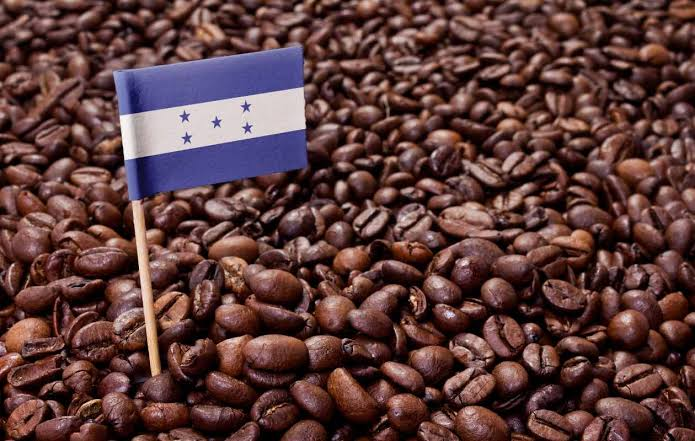

Honduras respira el espíritu cívico y libertario del General Francisco Morazán, insigne estadista y prócer centroamericano
cuyo pensamiento visionario abogó por la unidad, la educación pública y la soberanía de las naciones de la región.
Su legado inspira hoy la integración turística y cultural de Centroamérica.
El patrimonio humano del país se enriquece con la presencia activa de pueblos originarios y afrodescendientes que conservan sus lenguas y tradiciones ancestrales:
El grupo indígena más numeroso, asentado en el occidente (Intibucá, La Paz, Lempira), custodios de rituales agrarios y alfarería tradicional.
Patrimonio Cultural Inmaterial de la Humanidad, situados en la costa caribeña, con rica tradición musical (punta), danza y culinaria a base de coco y plátano.
Comunidades autónomas de la Mosquitia, la montaña de la Flor y Copán, arraigadas profundamente en la protección de los bosques tropicales.
Sabores auténticos que fusionan ingredientes mesoamericanos, caribeños y coloniales.

Tortilla de harina de trigo recién hecha doblada, rellena de frijoles fritos, mantequilla crema hondureña y queso seco rallado.

Exquisita preparación caribeña a base de caracol fresco cocinado en caldo de coco con yuca, plátano verde (guineo) y especias.

Bebida caliente prehispánica elaborada con maíz tierno natural, endulzada con canela y un toque de pimienta gorda.

Granos selectos cultivados en regiones montañosas con denominación de origen (Marcala, Copán, Opalaca, Comayagua), de reconocimiento mundial.